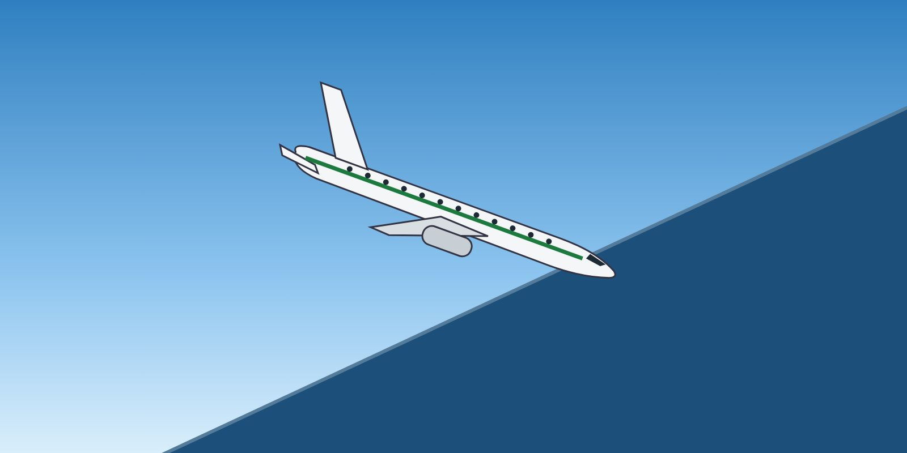

Module 8 · OM D Complementary Elements
Lesson 26: Specialised Manoeuvres: Slow Flight, Steep Turns, Spiral Dive and Uncoordinated Stalls
Lesson narration
Checking for narration…
Learning objectives
- Describe aircraft behaviour in slow flight and steep turns.
- Recognise a spiral dive and recover in the right order.
- Explain uncoordinated (yaw-aggravated) stalls, stick pusher activation, and how recovery changes with speed.

Why these manoeuvres
The OM D UPRT programme (element J) includes specialised manoeuvres trained in the simulator. This lesson gives the theory behind them, so that the simulator session builds on understanding.
Slow flight
- At low speed the controls are less effective and need larger inputs; the aircraft is close to the critical angle of attack.
- Below the minimum drag speed the aircraft is on the back side of the power curve: a lower speed needs more thrust. Pitching up without power makes the speed decay further.
Steep turns
- In a level turn the load factor rises with bank: about 1.4 g at 45° and 2 g at 60°. The stall speed rises with the square root of the load factor (Lesson 6).
- Back pressure and thrust must increase to hold altitude. At high bank the aircraft tends to overbank; hold the bank with opposite aileron.
Spiral dive
- A nose-low, high-bank descent with increasing speed and load factor — often entered without the crew noticing (spatial disorientation, Lesson 14).
- Pulling first only tightens the spiral and increases g. Recovery: reduce thrust, roll wings level first, then recover pitch smoothly within g limits; use speedbrakes if the speed is high.
Approach to stall and full stall
- Approach to stall — first indication (stick shaker, buffet): reduce angle of attack immediately and recover the speed.
- Full stall — buffet, nose drop, roll-off or loss of pitch authority: reduce angle of attack until the stall indications stop, then recover (Lesson 20).
- Uncoordinated stall — with yaw (sideslip) at the stall, one wing stalls first and the aircraft rolls and yaws towards it (wing drop). Large aileron inputs can deepen the stall on the low wing. Reduce angle of attack first, keep the rudder neutral or use it only to stop further yaw, then roll wings level once unstalled.
- Stick pusher (where fitted, for example on the Q400 — check your AOM): it pushes the nose down to reduce angle of attack. Do not fight it. Let it work, then complete the stall recovery.
Recovery depends on speed
| Upset | High speed | Low speed |
|---|---|---|
| Nose-high | Plenty of energy: unload towards 1 g, let the nose come down, avoid excessive g; reduce thrust if the speed increases quickly. | Little energy, stall risk: unload (towards 0.5 g), reduce thrust if the nose will not come down (underwing engines), bank to help the nose drop (Lesson 21). |
| Nose-low | Speed rising fast: reduce thrust, roll wings level first, speedbrakes as needed, then recover pitch within g limits (Lesson 22). | The aircraft may be stalled: stall recovery first, then roll wings level and recover with thrust. |
LOFT / LOS
The programme ends with line-oriented scenarios (LOFT / LOS), where upsets develop from realistic threats such as weather, automation or system failures — training recognition and crew coordination, not only the manoeuvre.
Key takeaways
- Slow flight: weak controls, back side of the power curve.
- Spiral dive: thrust reduce, roll wings level first, then pull.
- Uncoordinated stall: reduce angle of attack first; avoid large aileron inputs while stalled.
- Stick pusher: never fight it. Recovery technique depends on speed as well as attitude.
Knowledge check
In a spiral dive with increasing speed, what is the correct order?